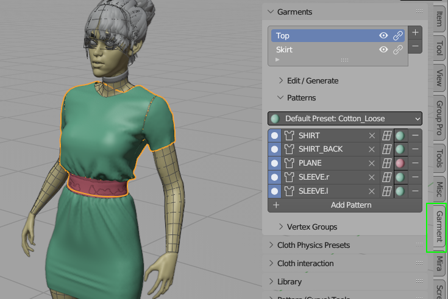
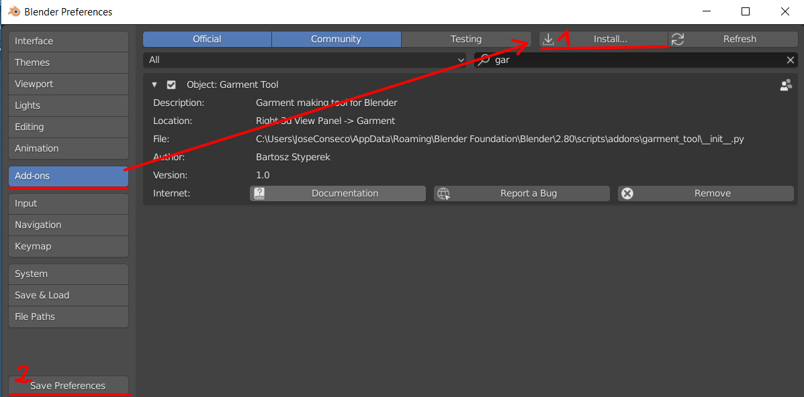
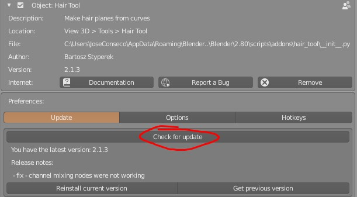

Garment Tool Documentation#
The Garment Tool (available at https://gumroad.com/l/GarmentTool) is a Blender add-on that streamlines the process of creating simulation ready, cloth meshes within Blender 3.6 and 4.x. These cloth meshes are created from 2D Bezier curves, stitched together, and then converted into a triangulation mesh object.
For support use Gament Tool Discord channel
Garment Tool panel is located in:
- 3D Viewport > right Sidebar (N) > Garment Tool Tab.

Features#
- sewing patterns modeling tools: symmetrize, split, flip, duplicate, stitch, connect, separate, join
- define stitching between patterns, directly in 3d viewport, visualize mismatched sewn segments lengths,
- generate evenly triangulated mesh with adjustable resolution,
- easy, per sewing pattern, cloth physics material assignment,
- automated vertex groups generation,
- custom bend tool for wrapping e.g. sleeves around character arms,
- Support for cutting holes inside sewing patterns (since 1.0.6)
- Pin tool for generating custom stitches (useful for buttons)
- Pocket tool for projecting stitches from source patterns to target pattern
- Bind Tool -> easy way of projecting 3d mesh, on surface of simulated cloth (useful for making attachments, bags, pockets, etc.)
- Garment library - store and load your creations
- saving baked simulation into shape-key
Limitations#
No interaction with simulated cloth in BlenderSupport for cloth interaction added in version 1.1.0Rarely but it happens that triangulation fails to find solution for given sewing pattern.Usually increasing triangulation resolution parameters fixes that.There is now way to cut holes or add sewing cuts inside pattern.Support for cutting holes added since version 1.0.6
Installation#

Edit → User Preferences → Add-ons tab, press 'Install' button, in bottom bar.
Remember to press 'Save Preferences', so that addon stays enabled after restarting blender.
When you are updating addon, usually it is good to remove old version by using 'Remove' button (visible on image above), before installing new version.
Updating#
Garment Tool has build in auto updater. When you use it, updater will download latest Garment Tool release and install in background. To use auto updater go to:
- Edit -> Preferences -> Add-ons -> Garment Tool -> press 'Check for update'.

In new version is found, press 'Update addon' button, wait few seconds for download, installation and restart blender. Or you download update manually by getting new zip file from your Gumroad account. You should have received download link to zip file, with email when you purchased Garment Tool.